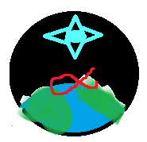

Why are we inspired by the Artemis mission back to the moon? Our Apollo 11 mission was the first mission in 1969 that landed humans on the moon. Three people, commander Neil Armstrong, and lunar module pilot Buzz Aldrin landed the Apollo Eagle on the moon. That was 50 years ago when they planted the American flag and left footprints on the moon. Right now, our Artemis mission will go back to the moon in 2024, and our purpose of the mission is to go back to the moon and sustain there for a few days and build a lunar base on the moon so we can get to Mars in the 2030s.
Designed and Created by Daniel Zhou